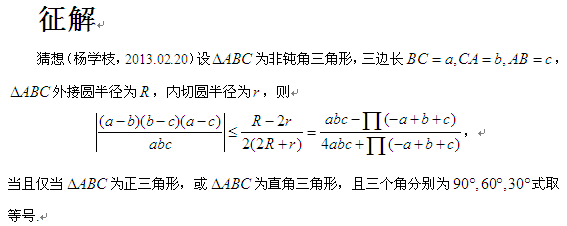

刚才在粉丝群共享看到的。

(9.75 KB)
2013-2-26 10:17 
由 Schur 不等式知右边非负，若三边中有两边相等，则左边为 $0$，此时不等式成立，当三角形为正三角形时取等。
下设三边都不相等，由对称性，不妨设 $a<b<c$，则可令 $b=a+t$, $c=a+t+u$, $t$, $u>0$，代入原不等式中等价于
\[\frac{a (a+t) (a+t+u)-(a-u) (a+u) (a+2 t+u)}{4 a (a+t) (a+t+u)+(a-u) (a+u) (a+2 t+u)}\geqslant \frac{t u (t+u)}{a (a+t) (a+t+u)},\]
去分母展开并按 $a$ 整理等价于
\begin{align*}
f(a)={}&a^4(t^2+t u+u^2)+a^3(2 t^3-2 t^2 u+2 u^3)+a^2(t^4-8 t^3 u-9 t^2 u^2+u^4)\\
&+a(-4 t^4 u-6 t^3 u^2+2 t u^4)+2 t^3 u^3+3 t^2 u^4+t u^5\geqslant 0,
\end{align*}
求导得
\begin{align*}
f'(a)={}&4 a^3(t^2+t u+u^2)+3 a^2(2 t^3-2 t^2 u+2 u^3)+2 a(t^4-8 t^3 u-9 t^2 u^2+u^4)\\
&{}-4 t^4 u-6 t^3 u^2+2 t u^4,
\end{align*}
由非钝角三角形条件知
\[a^2+b^2\geqslant c^2\iff a^2+(a+t)^2\geqslant (a+t+u)^2\iff a^2\geqslant 2au+2tu+u^2,\]
解得
\[a\geqslant u+\sqrt{2u(t+u)},\]
于是
\begin{align*}
f'(a)\geqslant{}& 4 a(2au+2tu+u^2)(t^2+t u+u^2)+3 a^2(2 t^3-2 t^2 u+2 u^3)+2 a(t^4-8 t^3 u-9 t^2 u^2+u^4)\\
&{}-4 t^4 u-6 t^3 u^2+2 t u^4\\
={}& a^2(6 t^3+2 t^2 u+8 t u^2+14 u^3)+a(2 t^4-8 t^3 u-6 t^2 u^2+12 t u^3+6 u^4)\\
&{}-4 t^4 u-6 t^3 u^2+2 t u^4\\
\geqslant{}& (2au+2tu+u^2)(6 t^3+2 t^2 u+8 t u^2+14 u^3)+a(2 t^4-8 t^3 u-6 t^2 u^2+12 t u^3+6 u^4)\\
&{}-4 t^4 u-6 t^3 u^2+2 t u^4\\
={}& a(2 t^4+4 t^3 u-2 t^2 u^2+28 t u^3+34 u^4)+8 t^4 u+4 t^3 u^2+18 t^2 u^3+38 t u^4+14 u^5\\
>{}&0,
\end{align*}
所以
\[f(a)\geqslant f\bigl(u+\sqrt{2u(t+u)}\bigr),\]
令
\[m=\sqrt{2\left( \frac tu+1 \right)}\iff t=\left( \frac{m^2}2-1 \right)u,\]
代入化简得
\[f\bigl(u+\sqrt{2u(t+u)}\bigr)=\frac{u^6}{16} m^2 (m+1)^2 (m+2)^2 (m^2-2 m-2)^2\geqslant 0,\]
从而原不等式成立。
再看看不等边时的等号成立条件，在上述所设下，取等号当且仅当 $a=u+\sqrt{2u(t+u)}$ 且 $m^2-2 m-2=0$，后者解得 $m=\sqrt3+1$，代入前者化简易得 $t=\bigl(\sqrt3-1\bigr)a$, $u=\bigl(2-\sqrt3\bigr)a$，所以此时 $a:b:c=1:\sqrt3:2$，即三角形为 $90^\circ$, $60^\circ$, $30^\circ$ 角的直角三角形。
|

 发表于 2013-2-26 10:16
发表于 2013-2-26 10:16